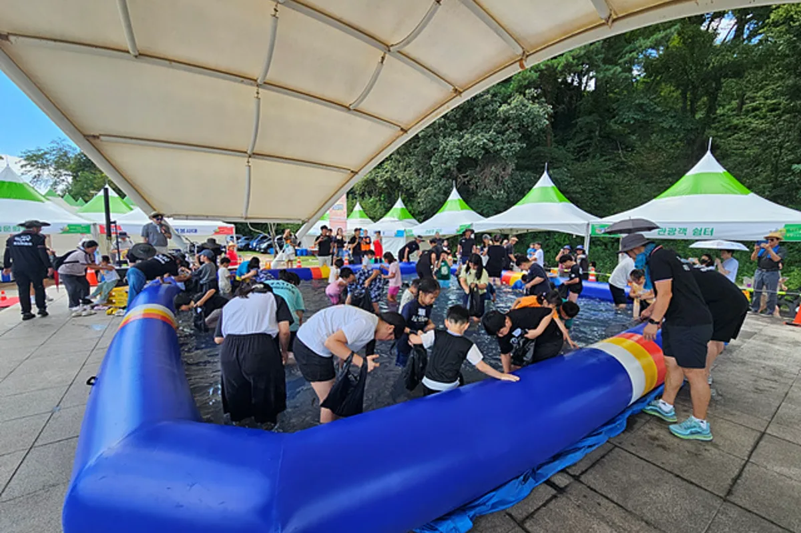
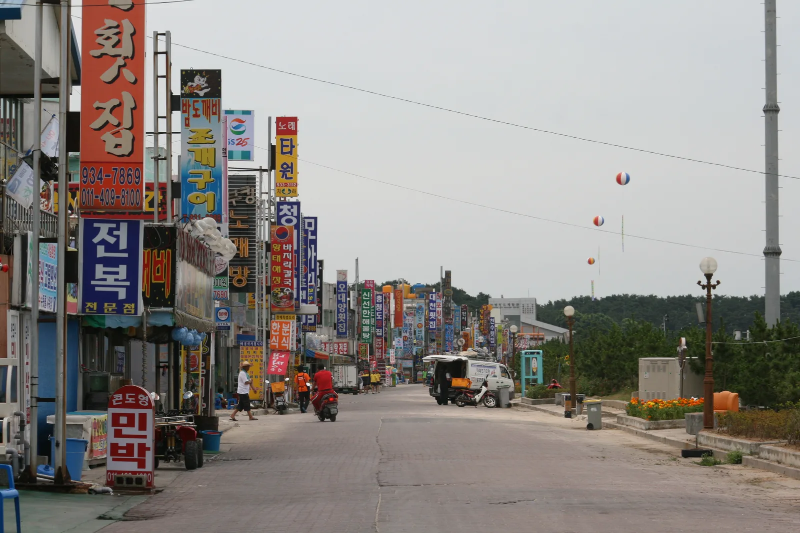

▲ 노을이 내려앉은 무창포해수욕장. 물이 들어찬 때는 이렇게 잔잔한 해변이지만, 하루 두 번 물이 크게 빠지면 앞바다 섬까지 걸어 들어갈 수 있는 바닷길이 열린다 ⓒ Asadal Lee (Wikimedia Commons, CC BY-SA 2.0 KR)
충남 보령시 웅천읍 무창포해수욕장은 다른 서해안 대하 축제 장소들과 결정적으로 다른 게 하나 있다. 대하·전어를 먹으러 갔다가, 하루 두 차례 바다가 갈라지며 드러나는 '신비의 바닷길'을 걸어볼 수 있다는 점이다. 보령시는 2026년 9월 18일(금)부터 10월 11일(일)까지 무창포항·무창포해수욕장 일원에서 대하·전어축제를 연다. 안면도 백사장항, 홍성 남당항처럼 시가로 대하를 파는 축제이지만, 축제 기간과 물때가 맞아떨어지는 날에는 축제장 바로 앞바다에서 바닷길 체험까지 묶을 수 있다는 게 무창포만의 차별점이다. 이 기사는 바닷길이 왜 하루에 두 번 열리는지부터 2026년 9~10월 물때 시간표, 축제 프로그램, 가는 법·주차까지 순서대로 정리했다.
1. 하루에 두 번 갈라진다 — 무창포 신비의 바닷길은 왜 이런 현상이 생길까

▲ 물이 빠지며 드러난 서해안 바닷길의 모습(참고사진, 화성 제부도). 무창포에서도 하루 두 차례 비슷한 원리로 바닷길이 열린다 ⓒ 대한민국 구석구석(한국관광공사)
무창포해수욕장 앞바다에는 폭 15~30m, 길이 약 1.5km에 이르는 모래·자갈 둔덕이 해수욕장에서 무인도 석대도까지 이어져 있다. 평소에는 이 둔덕이 바닷물 아래 잠겨 보이지 않지만, 물이 크게 빠지는 시간대에는 주변보다 높이 솟은 이 지형만 물 밖으로 드러나면서 걸어서 섬까지 건너갈 수 있는 길이 만들어진다. 바닷물은 밀물과 썰물이 하루에 각각 두 번씩 반복되는 반일주조(半日周潮) 형태로 드나드는데, 이 두 번의 썰물 시점 모두 물이 충분히 낮게 빠지는 음력 보름·그믐 무렵(사리 물때)에는 하루 두 차례 바닷길이 모습을 드러낸다. 반대로 물이 적게 빠지는 조금 물때에는 둔덕이 채 드러나지 않아 바닷길이 열리지 않거나 한 번만 짧게 열리기도 한다. '한국판 모세의 기적'이라는 별명이 붙었지만, 실제로는 지형과 조석 주기가 맞아떨어질 때만 나타나는 현상인 셈이다.
이 때문에 무창포를 찾을 때는 축제 날짜보다 물때표를 먼저 확인하는 편이 안전하다. 바닷길이 열려 있는 시간은 보통 1~2시간 안팎으로 짧고, 개방 시간이 지나면 밀물이 빠르게 차오르므로 안내된 입·출입 가능 시간을 반드시 지켜야 한다.
무창포해수욕장 공식 홈페이지에서 바닷길 시간표 확인 가능2. 2026년 9~10월 물때 시간표 — 축제 기간과 겹치는 날짜는 언제
국립해양조사원과 무창포항 물때 정보를 종합하면, 2026년 9월 하순부터 10월 중순까지 바닷길이 뚜렷하게 드러나는 시간대는 아래와 같다. 축제 기간(9/18~10/11) 안에서는 9월 28~30일이 사리 물때와 겹쳐 바닷길이 넉넉하게 열리는 대표적인 날짜로 꼽힌다.
| 날짜 | 바닷길 개방 시간 | 비고 |
|---|---|---|
| 9월 28일(월) | 10:14 ~ 11:16 | 축제 기간 · 사리 물때 |
| 9월 29일(화) | 10:38 ~ 11:55 | 축제 기간 · 사리 물때 |
| 9월 30일(수) | 11:17 ~ 12:22 | 축제 기간 · 사리 물때 |
| 10월 10일(토) | 09:24~09:42, 21:36~22:09 | 축제 기간 · 주말, 하루 2회 개방 |
| 10월 11일(일) | 09:33 ~ 10:37 | 축제 마지막 날 |
| 10월 12일(월) | 10:02 ~ 11:07 | 축제 종료 후 |
| 10월 13일(화) | 10:48 ~ 11:17 | 축제 종료 후 |
※ 국립해양조사원 바다갈라짐예보·무창포항 물때 정보 기준. 기상·해상 상황에 따라 실제 개방 시간은 앞뒤로 조정될 수 있어 방문 당일 재확인이 필요하다.
표에서 보듯 10월 10일은 오전과 밤, 하루 두 차례 모두 바닷길이 열리는 날이다. 다만 밤 시간대 개방은 안전상 도보 진입이 제한될 수 있으므로, 실제 체험은 오전 개방 시간에 맞추는 편이 현실적이다. 축제가 끝난 뒤인 10월 12~13일에도 바닷길 자체는 계속 열리므로, 대하·전어축제와 날짜가 안 맞았다면 이 시기를 노려볼 수도 있다.
방문 전 체크
- 바닷길 개방 시간은 매달 달라진다. 방문 날짜가 위 표에 없다면 국립해양조사원 '안전해(海)' 앱이나 무창포해수욕장 홈페이지에서 해당 월 시간표를 다시 확인해야 한다.
- 개방 시간은 통상 1~2시간 남짓이다. 안내판에 표시된 입장 마감 시간을 넘기면 만조로 고립될 위험이 있어 반드시 지켜야 한다.
- 바닥은 갯벌이 섞인 자갈·모래 지형이라 미끄럼 방지 신발을 챙기는 편이 좋다.
3. 대하·전어에 드론라이트쇼까지 — 축제 프로그램

▲ 은박 불판에 구운 대하 소금구이(참고 이미지). 무창포 대하·전어축제 기간에는 평소보다 저렴한 시세로 대하·전어를 판매한다 ⓒ 채지형 (공유마당, CC BY)
2026년 무창포 대하·전어축제는 9월 18일 오후 6시 30분 무창포광장 상설무대 개막식으로 문을 연다. 지역 연예인 축하공연과 함께 축제 기간 내내 천수만에서 갓 잡은 대하·전어를 평소보다 저렴한 가격으로 살 수 있는 게 핵심이다. 갯벌에서 조개·대하를 직접 잡아보는 체험 프로그램도 함께 운영된다.

▲ 맨손 물고기잡기 체험 모습(참고 이미지, 광양 전어축제). 무창포에서도 대하·전어 맨손잡기 체험이 운영된다
대하·전어축제와 별도로, 앞서 9월 11~13일에는 제26회 무창포 신비의 바닷길 축제가 먼저 열려 야간 콘텐츠를 선보였다. 이 축제 밤 프로그램의 하이라이트였던 'SEA-ROAD 멀티미디어 드론라이트쇼'는 드론 1,000대가 무창포 고유의 '아기장수 설화'와 신비의 바닷길을 밤하늘에 그려내고, 이어 관광객들이 LED 횃불을 들고 실제 바닷길을 걷는 횃불체험으로 이어졌다.

▲ 해변에서 열리는 야간 드론라이트쇼 모습(참고 이미지, 부산 광안리). 무창포 신비의 바닷길 축제에서도 1,000대 규모 드론쇼가 열렸다
| 구분 | 무창포 신비의 바닷길 축제 | 무창포 대하·전어 축제 |
|---|---|---|
| 2026년 기간 | 9월 11일(금)~13일(일), 3일간 | 9월 18일(금)~10월 11일(일), 24일간 |
| 회차 | 제26회 | - |
| 핵심 콘텐츠 | 드론라이트쇼, 횃불 바닷길 체험, 마당극 | 대하·전어 시식·판매, 맨손 잡기 체험 |
| 장소 | 무창포해수욕장 일원 | 무창포항·무창포해수욕장 일원 |
※ 보령시청 문화관광 공식 페이지 기준. 두 축제는 이름과 기간이 다른 별개 행사이므로 혼동하지 않도록 주의해야 한다.
즉 야간 드론쇼를 노렸다면 9월 11~13일이 지나 아쉬울 수 있지만, 대하·전어 미식과 바닷길 체험만 놓고 보면 9월 18일부터 10월 11일까지 시간이 넉넉하다. 특히 9월 28~30일처럼 축제 기간과 사리 물때가 겹치는 날을 고르면, 대하를 먹고 바로 앞바다 바닷길까지 걷는 일정이 하루에 가능하다.
4. 가는 법·주차 — 무창포 IC에서 1.5km
무창포해수욕장은 서해안고속도로 무창포 IC에서 약 1.5km 거리로, 수도권에서 자차로 접근하기 편한 편이다. 축제장인 무창포항·무창포해수욕장 일원까지는 IC를 나와 곧바로 표지판을 따라가면 된다.
| 구분 | 내용 |
|---|---|
| 자가용 | 서해안고속도로 무창포 IC → 약 1.5km |
| 철도+버스(웅천역) | 웅천역 하차 → 시내버스 하루 13회 운행, 약 10분 소요 |
| 철도+버스(대천역) | 대천역 하차 → 시내버스 하루 16회 운행, 약 40분 소요 |
| 축제장 주소 | 충남 보령시 웅천읍 무창포1로 (무창포해수욕장 일원) |
| 문의 | 무창포 어촌계·관광협의회 041-936-3510, 보령시 수산과 041-930-6762 |
대중교통은 웅천역이 대천역보다 배차 간격도 짧고 이동 시간도 짧아 더 유리하다. 다만 바닷길 개방 시간이 오전에 몰려 있는 날이 많은 만큼, 대중교통으로 이동한다면 첫차 시간대를 미리 확인해 개방 시간에 맞춰 도착하는 편이 좋다. 축제 기간 주말과 사리 물때가 겹치는 날(9/28~30 등)은 해수욕장 진입로와 주차장이 몰릴 수 있어, 자차로 방문한다면 오전 일찍 도착하는 것이 안전하다.
보령시 문화관광에서 축제 정보 확인 가능5. 무창포만 보고 오기 아깝다 — 대천해수욕장·송림 연계 코스

▲ 무창포와 같은 보령시에 있는 대천해수욕장 인근 횟집·민박 거리. 무창포에서 차로 20~30분 거리다 ⓒ Stinkie Pinkie (Wikimedia Commons, CC BY 2.0)
무창포는 보령의 여러 해변 중 하나일 뿐이다. 차로 20~30분 거리에는 서해안 최대 규모로 꼽히는 대천해수욕장이 있어, 매년 여름 보령머드축제가 열리는 곳이기도 하다. 대하·전어를 먹은 뒤 대천 쪽으로 이동해 해변을 한 바퀴 걷거나 횟집 거리에서 저녁을 먹는 동선도 무난하다. 조금 더 조용한 코스를 원한다면 보령 송림자연휴양림 쪽으로 방향을 잡아 소나무 숲길을 걷는 일정을 묶는 경우도 많다.
✅ 무창포 신비의 바닷길·대하전어축제, 가기 전 체크리스트
· 무창포 대하·전어축제는 2026년 9월 18일(금)~10월 11일(일), 무창포항·무창포해수욕장 일원에서 열린다
· '신비의 바닷길'은 조석 현상으로 하루 두 번 썰물 때 열리며, 두 번 모두 크게 빠지는 음력 보름·그믐 사리 물때에 뚜렷이 드러난다
· 축제 기간 중 바닷길이 넉넉히 열리는 날짜는 9월 28~30일, 10월 10~11일(예보 기준, 방문 전 재확인 필수)
· 개방 시간은 보통 1~2시간 안팎, 안내된 입·출입 시간을 반드시 지켜야 한다
· 별도 행사인 '무창포 신비의 바닷길 축제'(9/11~13, 드론라이트쇼·횃불체험)와 헷갈리지 않도록 주의
· 서해안고속도로 무창포 IC에서 약 1.5km, 철도는 웅천역 경유가 대천역보다 빠르다
· 근처 대천해수욕장·송림자연휴양림과 묶어 반나절 이상 일정으로 짜기 좋다